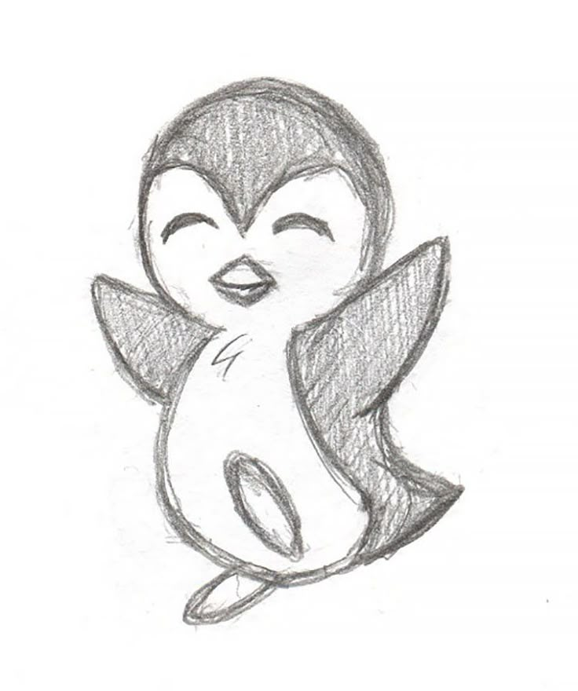

生成式 AI 的人文導論 · 期末專案
精緻屍體（Exquisite Corpse）是超現實主義的集體創作遊戲。
在這裡，AI將先畫出半幅作品，而你，只看得見接縫處。
然後用你的手，完成這具未知的身體。
AI 正在構思
生成中 ...
AI 已完成上半部分 — 只有接縫處對你可見

當完成創作後，作品將被存放在此網頁美術館中，於首頁被隨機擺放展覽
精緻屍體 · 完成
藝術・人・機器
生成式 AI 的崛起，讓一個古老的問題再度浮現：
什麼，能夠被稱為藝術？
超現實主義者相信，藝術的真諦在於繞開理性的控制，讓潛意識自由流淌。 精緻屍體因此而生，透過隱藏、斷裂與協作，創造出任何單一意識都無法預見的形象。 它從來就不是一個人的作品。
這幅畫的上半部，由 AI 完成。但 AI 究竟做了什麼？ 它並不理解美，不懷有意圖，也從未真正「看見」任何事物。 它所做的，只是根據龐大的訓練資料，以機率的方式，在畫紙上一個像素一個像素地塗上顏色。 那些形象的出現，是統計的結果，而非意志的展現。
然而，你看見了它留下的那條線，並選擇了如何回應。 你的猶豫、你的筆觸、你決定留下或抹去的每一道痕跡， 都是任何模型都無法複製的東西。
或許，藝術從來就不在於誰創造了什麼， 而在於某個意識，在面對未知的事物時，選擇了繼續。
這幅作品，是你的。也是 AI 的。更是這個時代所獨有的。